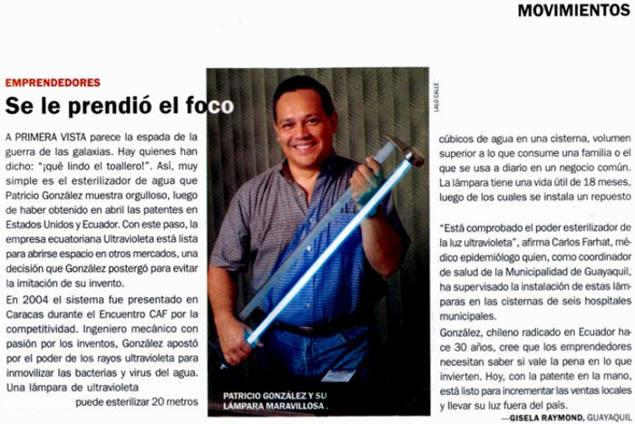
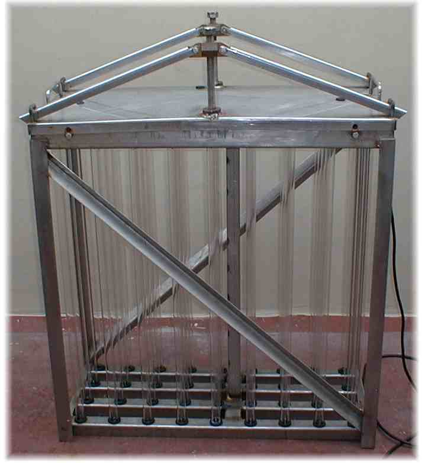
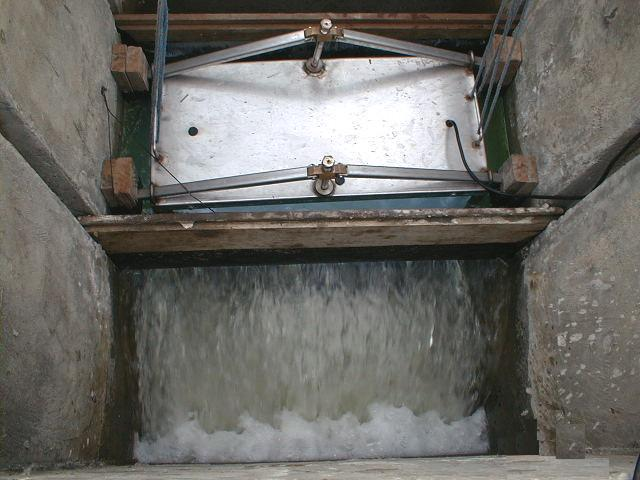
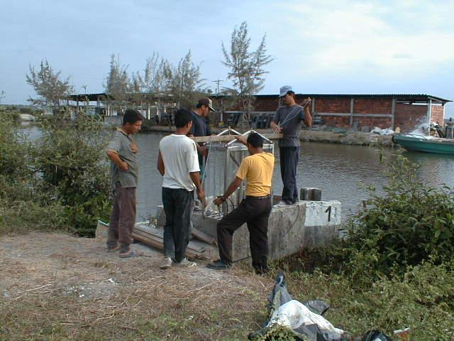

"Se le prendió el foco"
Patricio González, ingeniero mecánico y fundador de Ultravioleta S.A., obtuvo la patente en Estados Unidos y Ecuador para su innovadora lámpara esterilizadora de agua. El invento que nació de años de investigación hoy es una empresa ecuatoriana lista para conquistar mercados internacionales.
La solución elimina el 99.9% de microorganismos sin químicos, con un consumo eléctrico mínimo de apenas 30 watts — equivalent a dejar una bombilla encendida.
Contactar al equipo →En los medios

Portada: "Se le prendió el foco"
Ultravioleta S.A. en la portada de la revista América Economía. Reconocimiento internacional a la innovación ecuatoriana en esterilización de agua.

Ultravioleta S.A.: Innovación ecuatoriana con impacto global
Entrevista con el fundador sobre el proceso de patentamiento internacional y los planes de expansión hacia mercados latinoamericanos.

¿Cómo funciona la esterilización UV y por qué es superior al cloro?
Análisis técnico sobre la efectividad de la luz ultravioleta frente a los métodos tradicionales de desinfección de agua potable.

Soluciones UV para agua industrial: el caso Ultravioleta S.A.
Cómo empresas del sector acuícola, alimenticio y farmacéutico en Ecuador han adoptado la tecnología UV para garantizar agua de calidad.

Agua segura sin cloro: la revolución silenciosa del UV en hogares ecuatorianos
La tecnología que por décadas fue exclusiva de grandes industrias llega al hogar ecuatoriano a un costo accesible y de fácil mantenimiento.

Patente en EE.UU.: el logro del ingeniero guayaquileño que purifica el agua con luz
La historia detrás de la innovación: años de investigación, pruebas de laboratorio y el reconocimiento internacional que siguió.

Sin químicos: el impacto ambiental positivo de la esterilización UV
A diferencia del cloro y el ozono, la tecnología UV no genera subproductos tóxicos, haciendo del agua tratada también segura para el medioambiente.